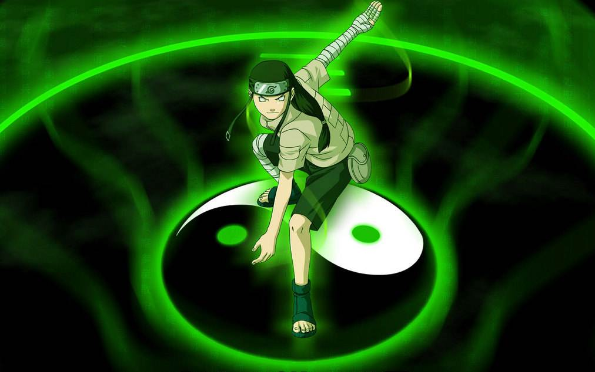

Sobre
Neji Hyuga, foi um membro do clã Hyuga e um shinobi de Konohagakure. Embora tenha sido um prodígio pelos padrões dos Hyuga, Neji era um membro da casa secundária, por isso, ele estaria sempre a serviço da casa principal Hyuga, um fato que convenceu-o de que o destino era predeterminado. Depois da luta com Naruto Uzumaki, Neji percebeu que cada um escolhe o seu destino, e como um membro do Time Guy, ele encontrou a força necessária para fazer o futuro que ele queria para sua família e amigos.
Traços de Personalidade
- Calculista
- Arrogante
- Protetor
Amigos
Ao longo da sua vida, Neji fez muitos amigos e companheiros.